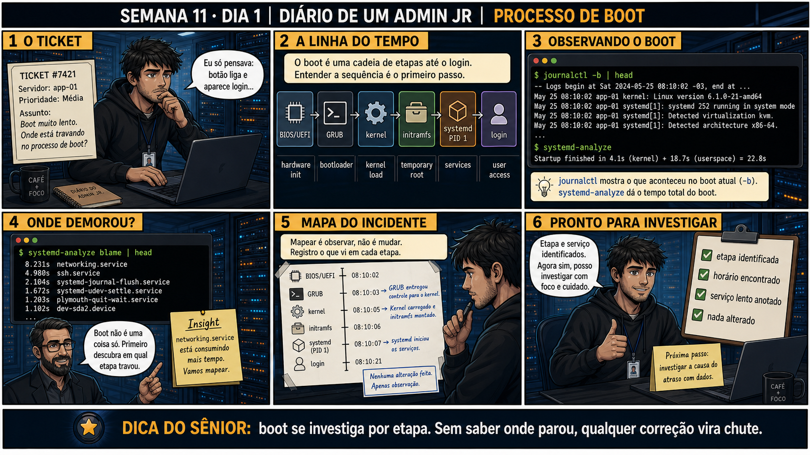

systemd-analyze blame ficou claro: um serviço de monitoramento de terceiros estava
aguardando um timeout de rede de 60 segundos antes de desistir e deixar o boot continuar. A correção
não foi "reiniciar de novo" — foi mapear a cadeia inteira primeiro, achar a etapa exata, e só então agir
sobre ela. O ponto que fica: boot lento sem mapa é reiniciar no escuro; boot lento com mapa é apontar o
dedo exatamente pro culpado.
Semana 11 · Dia 1 | Nível Júnior
Processo de Boot: Visão Geral
boot se investiga por etapa — sem saber onde parou, qualquer correção vira chute
ANTES DE ALTERAR, OBSERVE. DEPOIS DE ALTERAR, VALIDE.
1. O chamado
#7421
PRIORIDADE MÉDIA
09:40
aberto por: usuário final
host: app-01 · serviço: boot — desempenho
"Boot muito lento. Onde está travando no processo de boot?"
Antes de pensar em botão liga e aparece login: quais são as etapas reais entre um e outro, e qual delas está demorando?
💡 Passa o mouse nas palavras destacadas pra ver uma dica rápida — clica se quiser a explicação completa com analogia.
2. O sênior te conta
Semana passada, outro ticket
Um servidor demorou quase um minuto a mais pra ficar disponível depois de uma manutenção agendada, e o
primeiro impulso do time de plantão foi reiniciar de novo, torcendo pra "resolver sozinho" — reiniciar
resolveu por acaso duas vezes seguidas em incidentes anteriores, e virou reflexo. Dessa vez não resolveu:
o boot continuou lento, e ninguém sabia dizer SE o atraso estava no BIOS, no GRUB esperando input, no
kernel carregando, ou nos serviços do systemd competindo por rede. Só depois de rodar
3. Decodificador de conceitos
Clica em qualquer termo pra ver a definição completa e uma analogia do dia a dia:
4. Ferramentas e leitura da evidência
| Comando | O que observar e por que importa |
|---|---|
journalctl -b | Mostra os logs do boot atual, do início ao fim — a linha do tempo bruta. |
systemd-analyze | Dá o tempo total do boot, dividido em kernel + espaço do usuário. |
systemd-analyze blame | head | Ordena os serviços por tempo gasto — mostra exatamente onde o boot demorou. |
$ journalctl -b | head -- Logs begin at Sat 2024-05-25 08:10:02 -03, end at ... May 25 08:10:02 app-01 kernel: Linux version 6.1.0-21-amd64 May 25 08:10:02 app-01 systemd[1]: systemd 252 running in system mode. $ systemd-analyze Startup finished in 4.1s (kernel) + 18.7s (userspace) = 22.8s $ systemd-analyze blame | head 8.231s networking.service 4.980s ssh.service 2.104s systemd-journal-flush.service
5. Laboratório guiado — marca conforme for testando
Segurança: execute os testes apenas em VM descartável e confirme nomes de discos, hosts e arquivos antes de cada comando.
- Ação: rode journalctl -b e identifique as etapas BIOS, GRUB, kernel, initramfs e systemd nos logs.$ journalctl -b | head -20 -- Logs begin at Sat 2024-05-25 08:10:02 -03, end at ... May 25 08:10:02 app-01 kernel: Linux version 6.1.0-21-amd64 May 25 08:10:02 app-01 systemd[1]: systemd 252 running in system mode. May 25 08:10:03 app-01 systemd[1]: Reached target Local File Systems.
🔍 Detalhar esse comando
- journalctl
- Lê os logs centralizados do systemd (o journal).
- -b
- Mostra só as mensagens do boot atual (current boot), em vez do histórico de todos os boots já registrados.
- | head -20
- Mostra só as 20 primeiras linhas dessa saída — o início da sequência de boot.
Resultado esperado: linha do tempo completa do boot atual visível.Por quê: journalctl -b é a fonte bruta — sem filtro, sem interpretação, só o registro exato do que aconteceu, na ordem em que aconteceu.Se o seu resultado foi diferente
a saída parece vazia ou é de um boot antigo → confira comjournalctl --list-bootse escolha o número do boot certo comjournalctl -b -1(ou o índice mostrado) — o sistema pode ter sido reiniciado mais de uma vez desde então. - Ação: rode systemd-analyze e anote o tempo total, dividido entre kernel e userspace.$ systemd-analyze Startup finished in 4.1s (kernel) + 18.7s (userspace) = 22.8s graphical.target reached after 18.7s in userspace
🔍 Detalhar esse comando
- systemd-analyze
- Sem subcomando, mostra o resumo do tempo total de boot — quanto o kernel levou para carregar e quanto o userspace (systemd + serviços) levou até o alvo final.
- Startup finished in Xs (kernel) + Ys (userspace)
- Formato fixo da saída: a primeira parcela é o tempo de firmware+kernel até o systemd assumir; a segunda é o tempo do systemd até o sistema ficar pronto.
Resultado esperado: algo como Startup finished in Xs (kernel) + Ys (userspace).Por quê: separar kernel de userspace já diz em qual metade do boot procurar — kernel lento é hardware/firmware, userspace lento é serviço. - Ação: rode systemd-analyze blame | head e identifique o serviço mais lento.$ systemd-analyze blame | head 8.231s networking.service 4.980s ssh.service 2.104s systemd-journal-flush.service
🔍 Detalhar esse comando
- systemd-analyze
- Ferramenta que mede e detalha o tempo gasto em cada etapa do boot gerenciado pelo systemd.
- blame
- Subcomando que lista os serviços do boot ordenados do que MAIS demorou para o que menos demorou — 'quem é o culpado' pela demora.
- | head
- Mostra só os primeiros da lista (por padrão, 10 linhas) — os maiores consumidores de tempo de boot.
Resultado esperado: lista ordenada de serviços por tempo gasto no boot.Cilada comum: ver o serviço no topo da lista e já querer desativá-lo — o comando mostra ONDE o tempo foi gasto, não diz automaticamente que aquele serviço é dispensável.🧑🏫 Aqui entra o Mentor (em breve): se o serviço mais lento não fizer sentido pra você, este é o ponto onde o chat com o Sênior-IA vai ajudar a interpretar.Se o seu resultado foi diferente
"Bootup is not yet finished" → o systemd ainda está processando serviços de inicialização tardia. Aguarde o prompt de login estabilizar por completo antes de rodar o comando, ou os números virão incompletos. - Ação: monte um mapa do incidente: etapa → horário → observação, sem alterar nada no sistema.Resultado esperado: documento reproduzindo o painel 5 da prancha de hoje.
- Ação: confirme que nenhum comando de escrita foi executado durante toda a investigação.Resultado esperado: sistema pronto para investigação de causa, sem mudanças aplicadas.
6. Antes de ver as opções — tenta responder
🧠 Recall ativo: quais são, em ordem, as etapas entre apertar o botão liga e ver a tela de login?
BIOS/UEFI (inicialização de hardware) →
GRUB
(bootloader) → kernel (carregado em memória) →
initramfs
(raiz temporária) →
systemd
(PID 1, inicia serviços) → login. Seis etapas, cada uma pode ser o ponto de atraso.
7. Questão comentada — clica numa alternativa
Você quer descobrir qual etapa do boot está demorando mais, sem alterar nada no
sistema. Qual comando mostra isso diretamente?
💡 Analogia do Sênior para Fixar: A sequência BIOS/UEFI → GRUB → Kernel → Initramfs → Systemd é a passagem de bastão na corrida de revezamento: cada etapa prepara a memória e entrega o controle para a próxima.
7.1 O boot demora 22.8s no total, e networking.service sozinho consome 8.2s disso
Um colega, animado, já quer desativar o networking.service pra "resolver" a lentidão.
Qual é o próximo passo correto antes de qualquer mudança?
💡 Analogia do Sênior para Fixar: O GRUB é o cardápio inicial na porta do restaurante: permite escolher qual versão de kernel carregar ou aplicar parâmetros de emergência antes do sistema iniciar.
7.2 "Mapear o incidente conta como já ter corrigido algo?"
Você rodou journalctl -b, systemd-analyze e systemd-analyze blame, e anotou tudo num mapa com horários. Nenhum comando de escrita foi executado.
Isso significa que o sistema já foi alterado de alguma forma?
💡 Analogia do Sênior para Fixar: O Systemd como PID 1 é o maestro da orquestra: após o kernel acordar o hardware, o PID 1 inicia todos os serviços e gerencia o sistema até o desligamento.
8. Procedimento profissional
- Rode journalctl -b pra ver a linha do tempo bruta do boot atual.
- Rode systemd-analyze pra ter o tempo total dividido entre kernel e userspace.
- Rode systemd-analyze blame | head pra achar os serviços mais lentos.
- Registre etapa, horário e serviço lento — sem alterar nada ainda.
- Só depois de entender a causa, decida se uma mudança é necessária.
Prevenção
Padronize os três comandos de mapeamento (
journalctl -b,
systemd-analyze, systemd-analyze blame) como primeiro passo obrigatório de
qualquer chamado de "boot lento" — antes de qualquer sugestão de correção, mesmo as óbvias. Isso evita o
reflexo de "reiniciar de novo" ou desativar serviço às cegas, que só mascara o sintoma sem confirmar a
causa.9. Validação e encerramento
- journalctl -b, systemd-analyze e systemd-analyze blame foram rodados, nessa ordem.
- A etapa e o serviço mais lentos foram identificados e anotados.
- Nenhuma configuração ou serviço foi alterado durante o mapeamento.
- O mapa do incidente está pronto para a etapa de investigação da causa.
Rollback e limites
Os três comandos de hoje são estritamente de leitura — não existe rollback
necessário. O cuidado real é resistir à tentação de já corrigir algo antes de entender a causa raiz.
💡 Sobre repetição espaçada: "observe antes de mudar" é a mesma disciplina da
Semana 3 (ver antes de apagar) e da Semana 10 (verificar cada etapa de um backup) — agora aplicada ao boot. O
Anki vai conectar os três.
10. Resposta final
Alternativa correta: A. Nesta aula, a ferramenta certa foi
systemd-analyze blame | head, que lista os serviços do boot ordenados por tempo gasto sem alterar
nada. O ponto central do caso é este: boot se investiga por etapa, sem saber onde parou, qualquer correção
vira chute.
🔓 O que você desbloqueou hoje
Capacidade de mapear as seis etapas do boot e identificar onde o tempo foi
gasto, sem alterar nada. Amanhã você aprende a diferença entre editar o GRUB temporariamente (pra testar) e
editar permanentemente (pra valer) — e por que confundir os dois é um erro clássico.